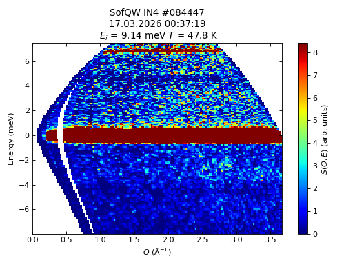
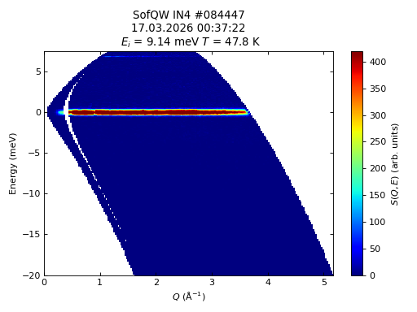
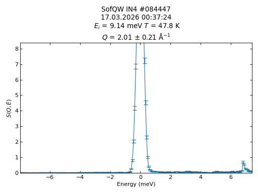
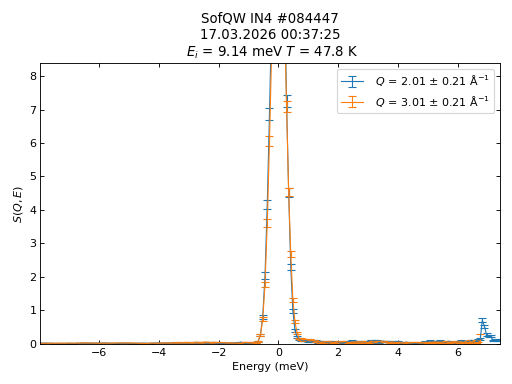
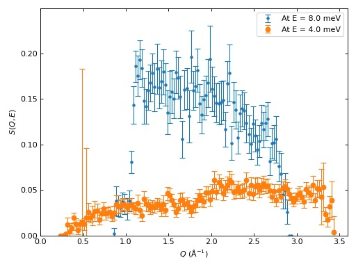
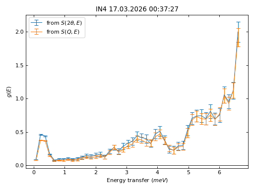

directtools#
directtools is a Python module for quickly plotting standardized \(S(Q,E)\) color fill plots as well as line profiles (cuts) in constant \(Q\) and \(E\). The module also provides a few utility functions for inspecting and manipulating the \(S(Q,E)\) workspace.
For a general introduction on using matplotlib with Mantid, see this introduction
The input workspaces are expected to have some specific sample logs, namely instrument.name, Ei, run_number, start_time, sample.temperature.
Examples#
Examples of some key functionality of directtools is presented below. For a full reference of all available function and classes, see the Reference section below.
plotSofQW#
The default parameters for directtools.plotSofQW() give a view of the \(S(Q,E)\) workspace around the elastic peak with sensible limits for the axes and intensity:
import directtools as dt
from mantid.simpleapi import *
DirectILLCollectData(Run='ILL/IN4/084447.nxs', OutputWorkspace='data')
DirectILLReduction(InputWorkspace='data', OutputWorkspace='SofQW')
fig, ax = dt.plotSofQW('SofQW')
#fig.show()
(Source code, png, hires.png, pdf)
{kind=link}
{kind=link}

The \(Q\), \(E\) and intensity limits can be changed using the optional parameters. The utility functions directtools.validQ() and directtools.nanminmax() might be helpful when determining suitable ranges:
import directtools as dt
from mantid.simpleapi import *
DirectILLCollectData(Run='ILL/IN4/084447.nxs', OutputWorkspace='data')
DirectILLReduction(InputWorkspace='data', OutputWorkspace='SofQW')
EMin = -20.
QMax = dt.validQ('SofQW', EMin)[1]
VMax = 0.5 * dt.nanminmax('SofQW')[1]
fig, axes = dt.plotSofQW('SofQW', QMax=QMax, EMin=EMin, VMax=VMax)
#fig.show()
(Source code, png, hires.png, pdf)
{kind=link}
{kind=link}

Cuts in \(S(Q,E)\)#
An important aspect of examining the \(S(Q,E)\) workspace is to plot cuts at constant \(Q\) and \(E\). This can be done by directtools.plotconstQ() and directtools.plotconstE():
import directtools as dt
from mantid.simpleapi import *
import warnings
DirectILLCollectData(Run='ILL/IN4/084447.nxs', OutputWorkspace='data')
DirectILLReduction(InputWorkspace='data', OutputWorkspace='SofQW')
Q = 2.
dQ = 0.2
# plotconstQ produces a warning on some versions of numpy.
# The "with" statement catches this warning so that the automated
# builds don't fail.
with warnings.catch_warnings():
warnings.simplefilter("ignore", category=UserWarning)
fig, axes, cuts = dt.plotconstQ('SofQW', Q, dQ)
#fig.show()
(Source code, png, hires.png, pdf)
{kind=link}
{kind=link}

Any of the workspace, cut centre or cut width arguments can be a list instead. This enables data comparison:
import directtools as dt
from mantid.simpleapi import *
DirectILLCollectData(Run='ILL/IN4/084447.nxs', OutputWorkspace='data')
DirectILLReduction(InputWorkspace='data', OutputWorkspace='SofQW')
Q1 = 2.
Q2 = 3.
dQ = 0.2
fig, axes, cuts = dt.plotconstQ('SofQW', [Q1, Q2], dQ)
#fig.show()
(Source code, png, hires.png, pdf)
{kind=link}
{kind=link}

The directtools.plotconstQ() and directtools.plotconstE() functions use directtools.plotcuts() to do the actual line profiles and plotting. The profiles are made by the LineProfile v1 algorithm, and all three plotting functions return a list of the produced line profile workspace names.
If a line profile already exists, it can be plotted using directtools.plotprofiles(). This also accepts either a single line profile workspace or a list of workspaces enabling comparison:
import directtools as dt
from mantid.simpleapi import *
DirectILLCollectData(Run='ILL/IN4/084447.nxs', OutputWorkspace='data')
DirectILLReduction(InputWorkspace='data', OutputWorkspace='SofQW')
E1 = 8.
dE = 2.
cut1 = LineProfile('SofQW', E1, dE, 'Horizontal')
label1 = 'At E = {} meV'.format(E1)
E2 = E1 - 4.
cut2 = LineProfile('SofQW', E2, dE, 'Horizontal')
label2 = 'At E = {} meV'.format(E2)
fig, axes = dt.plotprofiles([cut1, cut2], [label1, label2], style='m')
axes.legend()
#fig.show()
(Source code, png, hires.png, pdf)
{kind=link}
{kind=link}

Plotting density of states#
The density of states data calculated by ComputeIncoherentDOS can be plotted by the directtools.plotDOS() function. The function accepts a single workspace or a list of workspaces as its arguments. The example below shows a comparison of densities of states calculated from \(S(Q,E)\) and \(S(2\theta,E)\):
import directtools as dt
from mantid.simpleapi import *
DirectILLCollectData(Run='ILL/IN4/084447.nxs', OutputWorkspace='data')
DirectILLReduction(InputWorkspace='data', OutputWorkspace='SofQW', OutputSofThetaEnergyWorkspace='SofTW')
dosFromStw = ComputeIncoherentDOS('SofTW')
dosFromSqw = ComputeIncoherentDOS('SofQW')
fig, axes = dt.plotDOS([dosFromStw, dosFromSqw], labels=[r'from $S(2\theta, E)$', r'from $S(Q,E)$'])
#fig.show()
(Source code, png, hires.png, pdf)
{kind=link}
{kind=link}

Convenience tools#
directtools.SampleLogs is a convenience class to import the sample logs of a workspace into a ‘struct’ like object in Python:
import directtools as dt
from mantid.simpleapi import *
DirectILLCollectData(Run='ILL/IN4/084447.nxs', OutputWorkspace='data')
DirectILLReduction(InputWorkspace='data', OutputWorkspace='SofQW')
# Works on any workspace, not just S(Q,E).
logs = dt.SampleLogs('SofQW')
print(logs.instrument.name)
print(logs.run_number)
Output:
IN4
84447
Reference#
Classes#
- class directtools.SampleLogs(workspace)#
A convenience class to access the sample logs of
mantid.api.MatrixWorkspace.Upon initialization, this class adds the sample logs as data attributes to itself. The attributes get their names from the logs. Log names containing dots result in nested log objects. Thus, if a workspace contains logs
'a'and'b.c':logs = SampleLogs(workspace) # This is equivalent of calling workspace.run().getProperty('a').value logs.a # This is equivalent of calling workspace.run().getProperty('b.c').value logs.b.c
- __init__(workspace)#
Initialize a SampleLogs object. Transform sample log entries from workspace into attributes of this object.
- Parameters:
workspace (
mantid.api.MatrixWorkspace) – the workspace from which to extract the sample logs
Functions#
- directtools.box2D(xs, vertAxis, horMin=-inf, horMax=inf, vertMin=-inf, vertMax=inf)#
Return slicing for a 2D numpy array limited by given min and max values.
- Parameters:
xs (a 2D
numpy.ndarray) – the 2D X data of a workspace frommantid.api.MatrixWorkspace.extractX()vertAxis (a 1D
numpy.ndarray) – the vertical axis values of a workspacehorMin (float) – the left edge of the box
horMax (float) – the right edge of the box
vertMin (float) – the bottom edge of the box
vertMax (float) – the top edge of the box
- Returns:
a tuple of two
sliceobjects, the first one for vertical dimension, the second for horizontal.
- directtools.defaultrcparams()#
Return a dictionary of directtools default matplotlib rc parameters.
- Returns:
a
dictof defaultmatplotlibrc parameters needed bydirecttools
- directtools.dynamicsusceptibility(workspace, temperature, outputName=None, zeroEnergyEpsilon=1e-06)#
Convert \(S(Q,E)\) to susceptibility \(\chi''(Q,E)\).
If the X units are not in DeltaE, the workspace is transposed
The Y data in workspace is multiplied by \(1 - e^{\Delta E / (kT)}\)
Y data in the bin closest to 0 meV and within -zeroEnergyEpsilon < \(\Delta E\) < zeroEnergyEpsilon is set to 0
If the input was transposed, transpose the output as well
- Parameters:
workspace (
mantid.api.MatrixWorkspace) – a \(S(Q,E)\) workspace to converttemperature (float) – temperature in Kelvin
outputName (str or None) – name of the output workspace. If
None, the output will be given some generated name.zeroEnergyEpsilon (float) – if a bin center is within this value from 0, the bin’s value is set to zero.
- Returns:
a
mantid.api.MatrixWorkspacecontaining \(\chi''(Q,E)\)
- directtools.nanminmax(workspace, horMin=-inf, horMax=inf, vertMin=-inf, vertMax=inf)#
Return min and max intensities of a workspace ignoring NaNs.
The search region can be limited by horMin, horMax, vertMin and vertMax.
- Parameters:
workspace (
mantid.api.MatrixWorkspace) – a workspacehorMin (float) – the left edge of the search region
horMax (float) – the right edge of the search region
vertMin (float) – the bottom edge of the search region
vertMax (float) – the top edge of the search region
- Returns:
a tuple containing the minimum and maximum
- directtools.plotDOS(workspaces, labels=None, style='l', xscale='linear', yscale='linear')#
Plot density of state workspaces.
Plots the given DOS workspaces.
- Parameters:
workspaces (str,
mantid.api.MatrixWorkspaceor alistthereof) – a single workspace or a list thereoflabels (str, a
listof strings or None) – a list of labels for the plot legendstyle (str) – plot style: ‘l’ for lines, ‘m’ for markers, ‘lm’ for both
xscale (str) – horizontal axis scaling: ‘linear’, ‘log’, ‘symlog’, ‘logit’
yscale (str) – vertical axis scaling: ‘linear’, ‘log’, ‘symlog’, ‘logit’
- Returns:
a tuple of (
matplotlib.Figure,matplotlib.Axes)
- directtools.plotSofQW(workspace, QMin=0.0, QMax=None, EMin=None, EMax=None, VMin=0.0, VMax=None, colormap='jet', colorscale='linear')#
Plot a 2D \(S(Q,E)\) workspace.
- Parameters:
workspace (str or
mantid.api.MatrixWorkspace) – a workspace to plotEMin (float or None) – minimum energy transfer to include in the plot
EMax (float or None) – maximum energy transfer to include in the plot
VMin (float or None) – minimum intensity to show on the color bar
VMax (float or None) – maximum intensity to show on the color bar
colormap (str) – name of the colormap
colorscale (str) – color map scaling: ‘linear’, ‘log’
- Returns:
a tuple of (
matplotlib.Figure,matplotlib.Axes)
- directtools.plotconstE(workspaces, E, dE, style='l', keepCutWorkspaces=True, xscale='linear', yscale='linear')#
Plot line profiles at constant energy transfer from \(S(Q,E)\) workspace.
Creates cut workspaces using LineProfile v1, then plots the cuts. A list of workspaces, constant energy transfers, or cut widths, or any combination thereof can be given as parameters.
The last entry in the returned tuple is a list of cut workspace names. This will be an empty list is keeCutWorkspaces is set to False as the workspaces will not appear in the ADS.
- Parameters:
workspaces (str,
mantid.api.MatrixWorkspaceor a list thereof) – a single \(S(Q,E)\) workspace or list of workspaces to cutE (float or
listof floats) – a constant energy transfer or alistthereofdE (float or
listof floats) – width of the cut or a list of widthsstyle (str) – plot style: ‘l’ for lines, ‘m’ for markers, ‘lm’ for both
keepCutWorkspaces (bool) – whether or not keep the cut workspaces in the ADS
xscale (str) – horizontal axis scaling: ‘linear’, ‘log’, ‘symlog’, ‘logit’
yscale (str) – vertical axis scaling: ‘linear’, ‘log’, ‘symlog’, ‘logit’
- Returns:
A tuple of (
matplotlib.Figure,matplotlib.Axes, alistof names)
- directtools.plotconstQ(workspaces, Q, dQ, style='l', keepCutWorkspaces=True, xscale='linear', yscale='linear')#
Plot line profiles at constant momentum transfer from \(S(Q,E)\) workspace.
Creates cut workspaces using LineProfile v1, then plots the cuts. A list of workspaces, constant momentum transfers, or cut widths, or any combination thereof can be given as parameters.
The last entry in the returned tuple is a list of cut workspace names. This will be an empty list is keeCutWorkspaces is set to False as the workspaces will not appear in the ADS.
- Parameters:
workspaces (str,
mantid.api.MatrixWorkspaceor a list thereof) – a single \(S(Q,E)\) workspace or list of workspaces to cutQ (float or
listof floats) – a constant momentum transfer or alistthereofdQ (float or
listof floats) – width of the cut or a list of widthsstyle (str) – plot style: ‘l’ for lines, ‘m’ for markers, ‘lm’ for both
keepCutWorkspaces (bool) – whether or not keep the cut workspaces in the ADS
xscale (str) – horizontal axis scaling: ‘linear’, ‘log’, ‘symlog’, ‘logit’
yscale (str) – vertical axis scaling: ‘linear’, ‘log’, ‘symlog’, ‘logit’
- Returns:
A tuple of (
matplotlib.Figure,matplotlib.Axes, alistof names)
- directtools.plotcuts(direction, workspaces, cuts, widths, quantity, unit, style='l', keepCutWorkspaces=True, xscale='linear', yscale='linear')#
Cut and plot multiple line profiles.
Creates cut workspaces using LineProfile v1, then plots the cuts. A list of workspaces, cut centres, or cut widths, or any combination thereof can be given as parameters.
The last entry in the returned tuple is a list of cut workspace names. This will be an empty list is keeCutWorkspaces is set to False as the workspaces will not appear in the ADS.
- Parameters:
direction (str) – Cut direction. Only
'Horizontal'and'Vertical'are acceptedworkspaces (str,
mantid.api.MatrixWorkspaceor alistthereof) – a single workspace or a list thereofcuts (float or a
listthereof) – the center of the cut or a list of centerswidths (float or a
listthereof) – the width of the cut or a list of widthsquantity (str) – name of the physical quantity along which the cut is made, used for legend label
unit (str) – unit of quantity
style (str) – plot style: ‘l’ for lines, ‘m’ for markers, ‘lm’ for both
keepCutWorkspaces (bool) – whether or not keep the cut workspaces in the ADS
xscale (str) – horizontal axis scaling: ‘linear’, ‘log’, ‘symlog’, ‘logit’
yscale (str) – vertical axis scaling: ‘linear’, ‘log’, ‘symlog’, ‘logit’
- Returns:
A tuple of (
matplotlib.Figure,matplotlib.Axes, alistof names)
- directtools.plotprofiles(workspaces, labels=None, style='l', xscale='linear', yscale='linear')#
Plot line profile workspaces.
Plots the given single histogram cut workspaces.
- Parameters:
workspaces (str,
mantid.api.MatrixWorkspaceor alistthereof) – a single workspace or a list thereoflabels (str, a
listof strings or None) – a list of cut labels for the plot legendstyle (str) – plot style: ‘l’ for lines, ‘m’ for markers, ‘lm’ for both
xscale (str) – horizontal axis scaling: ‘linear’, ‘log’, ‘symlog’, ‘logit’
yscale (str) – vertical axis scaling: ‘linear’, ‘log’, ‘symlog’, ‘logit’
- Returns:
a tuple of (
matplotlib.Figure,matplotlib.Axes)
- directtools.subplots(**kwargs)#
Return matplotlib figure and axes with Mantid projection.
The returned figure and axes have the proper projection to plot Mantid workspaces directly.
- Parameters:
kwargs (dict) – keyword arguments that are directly passed to
matplotlib.pyplot.subplots().- Returns:
a tuple of (
matplotlib.Figure,matplotlib.Axes)
- directtools.validQ(workspace, E=0.0)#
Return a \(Q\) range at given energy transfer where \(S(Q,E)\) is defined.
\(S(Q,E)\) is undefined when Y = NaN
- Parameters:
workspace (str or
mantid.api.MatrixWorkspace) – A \(S(Q,E)\) workspace to investigateE (float) – energy transfer at which to evaluate the range
- Returns:
a tuple of (\(Q_{min}\), \(Q_{max}\))
- directtools.wsreport(workspace)#
Print some useful information from sample logs.
The logs are expected to contain some ILL specific fields.
- Parameters:
workspace (str or
mantid.api.MatrixWorkspace) – a workspace from which to extract the logs- Returns:
None
Category: Techniques